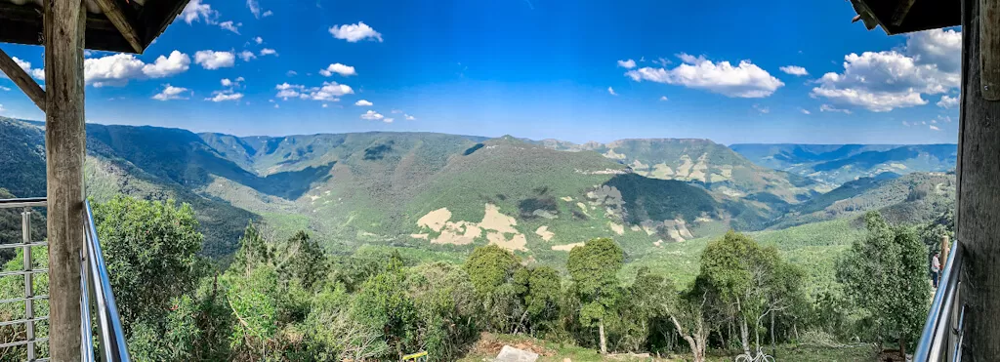
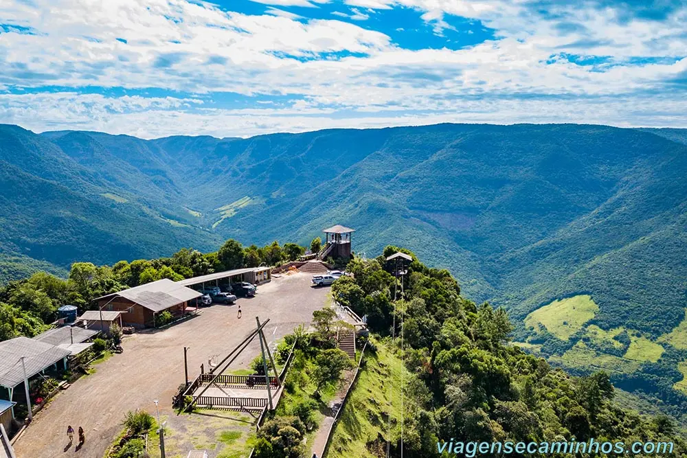
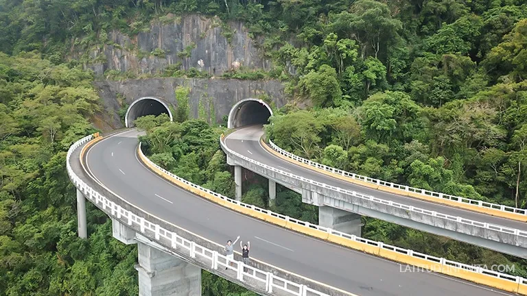

Rota do Sol - RS
Entre cânions e o litoral, essa estrada é um espetáculo natural.
Sobre a Rota
Ligando Caxias do Sul ao litoral gaúcho, essa estrada revela cânions, vales e paisagens costeiras incríveis, sendo um espetáculo à parte para quem curte o contraste entre serra e mar.
Informações rápidas
- Estado: Rio Grande do Sul
- Ponto inicial: São Borja (RS)
- Ponto final: Terra de Areia (RS)
- Distância: Aproximadamente 115 km
- Piso: Asfalto
- Dificuldade: Média
- Ideal para: Moto turismo e contemplação
Galeria




Saiba mais em: https://www.queroviajarmais.com/rota-do-sol/